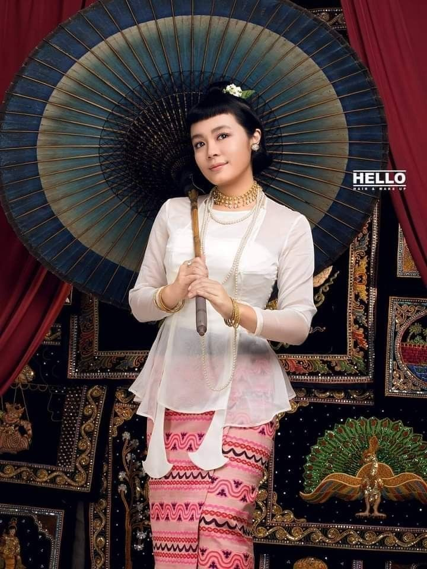

|  | Born | Shwe Yee Ko Oo, 9 August 1988 (age 33), Mogok, Burma |
| Nationality | Burmese | |
| Alma mater | University of Foreign Languages, Yangon | |
| Occupation | Actress, Model | |
| Years active | 2007–present | |
| Parent(s) | U Mg Oo & Daw Theingi | |
| Awards | Myanmar Academy Award (Best Actress for 2012, 2015, 2018) |
| Early life and education |
| Phway Phway was born on 9 August 1988 in Mogok, Burma to parent Mg U and his wife Theingi. She attended high school at the Kamayut 2 High School from 1993 to 2004, and graduated from University of Foreign Languages, Yangon with a Bachelor of Arts degree in Korean in 2008. |
| Career |
| Phway Phway had a great interest in becoming a singer as a child. She and her friends formed a band, "Art of Depression" with her as a vocalist. At university, she began modeling; her first modeling opportunity was for the MAX Calendar in 2007 with the name "Shwe Yee Ko Oo" which is her birth name. Then she named herself as "Phway Phway" as her actress name. Her modeling career led to appearing in music videos and TV commercials, and direct-to-video films. She starred in over 100 video films and appeared on many magazine covers. She was awarded a successful new face actor in 2009 People Magazine Award and the best leading actress in "Lat Pan" movie (which was her very first movie) in Myanmar Academy Awards 2012.She created her first MTV called MyWorld in August 2020. |
List of Films
| Year | Title | Director | Co-Stars | Role |
|---|---|---|---|---|
| 2012 | Red Cotton Silk Flower | Wyne | Pyay Ti Oo , Soe Myat Thuzar | Let Pan |
| 2012 | Zat Lan Haung Tway Shi Khae' Yin | Khin Mg Oo Soe Thein Htut | Khant Si Thu, Min Maw Kun, Htun Htun, Moe Moe, Soe Myat Thuzar | Shwe Yatu (Tu Tu) |
| 2014 | Mar Yar Project | Wyne | Nay Toe,Thet Mon Myint | Swae Nhyoe Shin |
| 2014 | Thet Tan Thit (New Rainbow) | Wyne | Aung Ye Lin | Thae Su Nway |
| 2014 | Ko Tint Toh Super Yat Kwat | Kyaw Zaw Lin | Ah Yine, Moe Pyae Pyae Maung, Nay Toe, Pyay Ti Oo, Myint Myat, Aung Ye Lin, Eaindra Kyaw Zin, Thet Mon Myint , Wutt Hmone Shwe Yi | Khin Chaw |
| 2015 | Online Paw Ka Wit Nyin | Nyi Nyi Htun Lwin | Nay Toe, Zay Ye' Htet | Shin Min Sett |
| 2015 | I'm Rose, Darling | Wyne | Nay Toe, Yoon Yoon, Heavy Phyo | Htar Tha Khin |
| 2015 | A Thet Ko A Thet Htet Po Ywae Chit The | Ko Zaw (Ar Yone Oo) | Aung Ye Lin | May Thet Maung |
| 2015 | Slaves of Cupid | Wyne | Nay Toe, Sai Sai Kham Leng | Ent Yoon |
| 2015 | Bo Ma | Na Gyi | Ye Deight, Aye Mya Phyu | Po Tay (Potato Head) |
| 2016 | Yite Lite Par Own "Done Done Done" | Thein Han (Phoenix) | Khant Si Thu | Moe Thar Phyu Phyu |
| 2016 | Color Sone Lesson(Colorful Lesson) | Mee Pwar | Sai Sai Kham Hlaing | Phyu Phyu |
| 2017 | Pa Hta Ma Htat Honey Moon(Honey Moon To First Floor) | Nyo Min Lwin | Zay Ye Htet, Soe Myat Thuzar | Phyu |
| 2017 | Kat Pi Ya | Ko Zaw (Ar Yone Oo) | Pyay Ti Oo, Kaung Pyae | Mya Chit |
| 2017 | Phone Kanyar Nhapar | Ko Zaw (Ar Yone Oo) | Myint Myat | Pyit Tine Htaung |
| 2017 | 3Girls | Wyne | A Lin Yaung, Ei Chaw Po, Paing Phyo Thu | Khaung Pwint Hlwar |
| 2018 | Shwe Kyar | Wyne | A Lin Yaung, Thinzar Wint Kyaw, Khin Zar Chi Kyaw | Shwe Kyar |
| 2018 | CO2 (Carbon Dioxide) | Wyne | A Lin Yaung, Kyaw Htet Aung, Yadanar Bo | Thar Yar |
| 2018 | The Storm that Kissed Me | Aung Zaw Lin, Win Lwin Htet | Hlwan Paing, Yair Yint Aung | Wint Shin Pyo |
| 2018 | Eaik Hti Ya | Ko Zaw (Ar Yone Oo) | A Lin Yaung, Soe Myat Thuzar, Khine Thin Kyi, Ko Pauk | Hsan Khet |
| 2018 | Letter To President | Wyne | A Lin Yaung, Chan Min Ye Htut, May Sue Maung, Ah Yine, Daw San San Win | Khet Khet Khine |
| 2018 | Clinging with Hate | Aww Ya Tha | Nay Toe, Min Thway, Kyaw Kyaw Bo, Aye Wutt Yee Thaung | Ma Thae Ohmm |
| 2018 | Bride | Wyne | A Lin Yaung, May | Thawdar |
| 2018 | Yee Sar Ta Won Kwal | Ko Zaw (Ar Yone Oo) | Sai Sai Kham Leng, Mya Hnin Yee Lwin | Ei Tone |
| 2019 | Kyar Tot The Lal Maung Sakar | Mee Pwar | Sai Sai Kham Leng, Htun Htun | Tin Tin Zaw |
| 2019 | Palpitation in the Breeze | Wyne | Kyaw Ye Aung, Moht Moht Myint Aung | Kyi Pyar |
| 2019 | Bal Nyar Bal Nyar (Left Right,Left Right) | Wyne | Myint Myat | Pone Pone |
| 2019 | Stranger's House | Htoo Paing Zaw Oo | Lwin Moe, Htun Aeindra Bo, Lin Zarni Zaw, Charlie, Shein Tin Htoo, Myat Noe Aye, Ku Ku Zin Aung, Joker | Nway Oo |
| 2019 | Pa Pa Wadi See Yin Khan | Wyne | Moe Hay Ko, A Lin Yaung, Htun Htun | Thet Htar Khin |
(Won The Best Actress Myanmar Academy Award)
| Red Cotton Silk Flower (လက်ပံ) |
I'm Rose, Darling (ကျွန်မကနှင်းဆီပါမောင်) |
Shwe Kyar (ရွှေကြာ) |